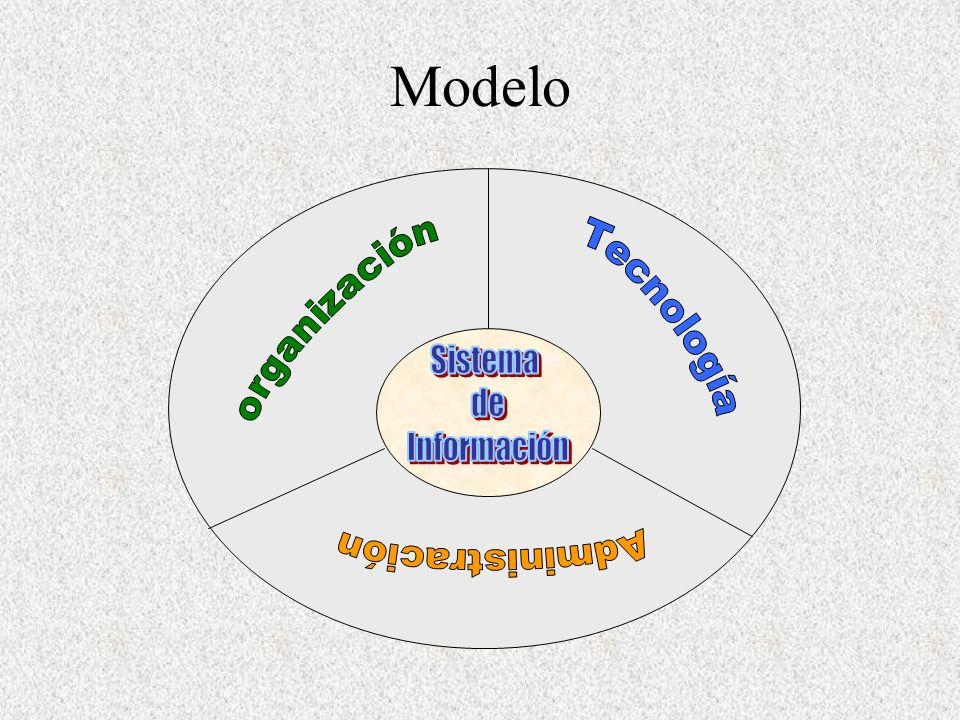

Modelo de sistemas de informacion
Nivel 1- Modelo Conceptual
Representación abstracta en la cual se entiende en un alto nivel las necesidades de información y datos de la Institución.
Nivel 2 - Modelo Lógico de datos
Identifica las entidades del negocio, sus atributos e interrelaciones con el propósito de entender detalladamente el uso de los datos por proceso.
Nivel 2 - Modelo Analítico de datos
Identificar los indicadores que se requieren para evaluar el desempeño de los procesos.
Nivel 3 – Modelo Físico de datos
Indefinición física de los datos que se estructuran en los sistemas de información.

|
|
Regresar al inicio